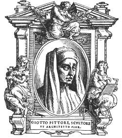

 A key figure for the whole of Western art, Giotto rivaled his fellow Florentine as well as with contemporary Dante in his richness of emotional expression and radical innovations. His stays in Assisi, Padua, Rimini, Milan, and Naples produced local schools of artists, called the "Giotteschi". Traditionally, Giotto was Cimabue's pupil. His training was completed, however, when he got to know the Roman school while working in Assisi with other artists. Critical argument still rages over whether Giotto's early days as an artist were spent on painting the fresco cycle of the Life of St Francis in Assisi's Upper Church. However, in 1304 he went to Padua where he undoubtedly painted the famous frescoes in the Arena Chapel.
On the following pages an overview of Giotto's masterworks is presented. It covers the frescoes in the Church of San Francesco at Assisi, the frescoes in the Arena Chapel (Cappella Scrovegni) in Padua, the frescoes in the Peruzzi and Bardi chapels of the Santa Croce in Florence, as well as the various panel paintings attributed to Giotto and his workshop.